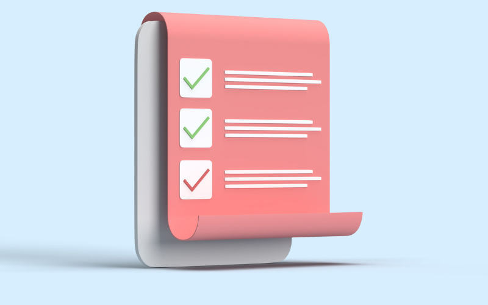

談到工業 4.0，多數人先想到的是物聯網、大數據、AI 或自動化。但真正把這些概念串起來、讓工廠「看得見、也看得懂」的，往往是最容易被忽略的一環——機器視覺。
如果說智慧工廠是一個會思考的有機體，那機器視覺就是它的眼睛。沒有可靠的視覺輸入，再強的 AI 與數據分析都是空談。
什麼是工業 4.0
工業 4.0 指的是製造業的第四次革命，核心是讓生產設備、資訊系統與資料彼此連結、即時溝通，進而做到自動化決策與持續優化。它的幾個關鍵特徵包括：
- 互聯：機台、感測器、系統彼此連線，資料即時流通。
- 資訊透明：從實體生產過程蒐集資料，建立可分析的數位映像。
- 輔助決策：系統能協助或自動做出判斷，減少人為延遲。
- 分散式決策：讓設備能在現場即時反應，而非事事回報中央。
這四點聽起來抽象，但落到產線上，機器視覺正是實現它們的具體手段之一。
機器視覺扮演的四個角色
在智慧製造的架構裡，機器視覺不只是「檢查有沒有瑕疵」，它至少同時承擔四種功能：
- 品質檢測：逐件檢查外觀、尺寸、瑕疵，取代人工目視，維持穩定一致的判定標準。
- 資料採集：每一次檢測都是一筆資料。累積下來，就是分析良率趨勢、找出問題根源的基礎。
- 製程回饋：把即時檢測結果回饋給上游設備，動態調整參數，在瑕疵擴大前先修正。
- 可追溯性：辨識序號、批號、條碼，讓每件產品都能被追蹤，是品質管理與召回控管的關鍵。

換句話說，機器視覺同時是智慧工廠的「感測器」與「資料源頭」。它不只回答「這件過不過」，還持續累積讓工廠越來越聰明的原料——資料。
從被動檢測到主動優化
傳統的視覺檢測是被動的守門員：站在產線末端，判斷過或不過。工業 4.0 帶來的最大轉變，是讓視覺系統走到前面、主動參與生產。
這個轉變體現在幾個層次：
- 從末端走向全程：不只在出貨前檢查，而是在每個關鍵製程都設點監控。
- 從判定走向回饋：檢測結果不只用來篩掉不良品，更用來調整上游製程。
- 從單機走向串接：視覺系統與 PLC、MES 串接，讓資料在整條產線流動，而非停在一台設備裡。
當視覺檢測從「事後把關」變成「即時調節」，工廠就從被動救火，轉為主動預防——這正是智慧製造真正的價值所在。
導入時的務實建議
工業 4.0 不是一次到位的大工程，而是一步步累積。對想導入或升級視覺系統的企業，建議先從以下幾點著手：
- 先解決最痛的點：找出目前漏檢率最高、人力成本最重的製程優先導入，效益最明顯。
- 重視資料的可用性：檢測系統要能把資料留下、能被分析，而不只是當下判定完就丟。
- 確認整合能力：視覺系統能不能跟現有的 PLC、MES 串接，決定了它能發揮多少價值。
- 保留成長空間：選擇能持續導入 AI、能隨新瑕疵類型再訓練的方案，避免很快過時。
炘智科技的角色
工業 4.0 的藍圖很宏大，但落地永遠是從一個具體的製程開始。炘智科技的專長，正是把機器視覺這隻「工廠的眼睛」，精準地裝在你最需要的地方——從視覺對位、瑕疵檢測到 AI 智慧化升級，並確保它能與你現有的產線與系統整合。
如果你正在規劃智慧製造的第一步，或想讓現有的視覺系統發揮更大價值，歡迎與我們聯絡，一起找出最適合你的切入點。